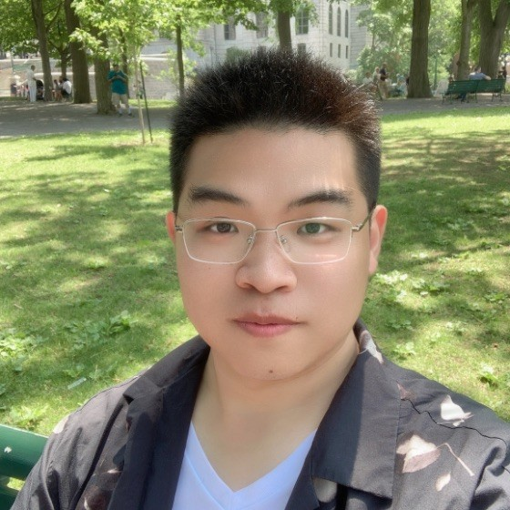

👋Hello! I'm Jiawei Ma, a software engineer specializing in designing and developing scalable backend systems. 
✌I recently graduated with a Master's in Computer Engineering from the University of Toronto.
✌I have experience leading projects in Java, Python, JavaScript and cloud platforms like AWS.
⚡Key skills and technologies I've worked with include:
⚡Some highlights from my recent experience include:
💪I'm passionate about crafting robust backend solutions using my strong programming foundation and cloud architecture knowledge. Let's connect!
{% endblock %}